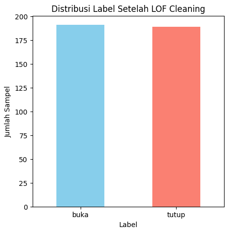
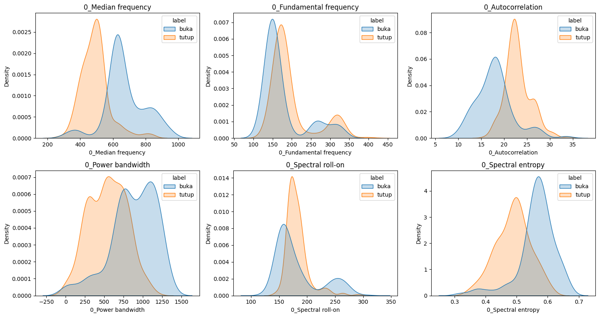

Ekstraksi Fitur Audio dengan 3 Domain#
Dataset menggunakan data voice 150 buka dan 150 tutup dengan format .wav yang di rekam oleh 2 orang
pip install tsfel librosa pandas scikit-learn
Requirement already satisfied: tsfel in /usr/local/python/3.12.1/lib/python3.12/site-packages (0.2.0)
Requirement already satisfied: librosa in /usr/local/python/3.12.1/lib/python3.12/site-packages (0.11.0)
Requirement already satisfied: pandas in /home/codespace/.local/lib/python3.12/site-packages (2.3.1)
Requirement already satisfied: scikit-learn in /home/codespace/.local/lib/python3.12/site-packages (1.7.0)
Requirement already satisfied: ipython>=7.4.0 in /home/codespace/.local/lib/python3.12/site-packages (from tsfel) (9.4.0)
Requirement already satisfied: numpy>=1.18.5 in /home/codespace/.local/lib/python3.12/site-packages (from tsfel) (2.3.1)
Requirement already satisfied: PyWavelets>=1.4.1 in /usr/local/python/3.12.1/lib/python3.12/site-packages (from tsfel) (1.9.0)
Requirement already satisfied: requests>=2.31.0 in /home/codespace/.local/lib/python3.12/site-packages (from tsfel) (2.32.4)
Requirement already satisfied: scipy>=1.7.3 in /home/codespace/.local/lib/python3.12/site-packages (from tsfel) (1.16.0)
Requirement already satisfied: setuptools>=47.1.1 in /home/codespace/.local/lib/python3.12/site-packages (from tsfel) (80.9.0)
Requirement already satisfied: statsmodels>=0.12.0 in /usr/local/python/3.12.1/lib/python3.12/site-packages (from tsfel) (0.14.5)
Requirement already satisfied: audioread>=2.1.9 in /usr/local/python/3.12.1/lib/python3.12/site-packages (from librosa) (3.1.0)
Requirement already satisfied: numba>=0.51.0 in /usr/local/python/3.12.1/lib/python3.12/site-packages (from librosa) (0.62.1)
Requirement already satisfied: joblib>=1.0 in /home/codespace/.local/lib/python3.12/site-packages (from librosa) (1.5.1)
Requirement already satisfied: decorator>=4.3.0 in /home/codespace/.local/lib/python3.12/site-packages (from librosa) (5.2.1)
Requirement already satisfied: soundfile>=0.12.1 in /usr/local/python/3.12.1/lib/python3.12/site-packages (from librosa) (0.13.1)
Requirement already satisfied: pooch>=1.1 in /usr/local/python/3.12.1/lib/python3.12/site-packages (from librosa) (1.8.2)
Requirement already satisfied: soxr>=0.3.2 in /usr/local/python/3.12.1/lib/python3.12/site-packages (from librosa) (1.0.0)
Requirement already satisfied: typing_extensions>=4.1.1 in /home/codespace/.local/lib/python3.12/site-packages (from librosa) (4.14.1)
Requirement already satisfied: lazy_loader>=0.1 in /usr/local/python/3.12.1/lib/python3.12/site-packages (from librosa) (0.4)
Requirement already satisfied: msgpack>=1.0 in /usr/local/python/3.12.1/lib/python3.12/site-packages (from librosa) (1.1.2)
Requirement already satisfied: python-dateutil>=2.8.2 in /home/codespace/.local/lib/python3.12/site-packages (from pandas) (2.9.0.post0)
Requirement already satisfied: pytz>=2020.1 in /home/codespace/.local/lib/python3.12/site-packages (from pandas) (2025.2)
Requirement already satisfied: tzdata>=2022.7 in /home/codespace/.local/lib/python3.12/site-packages (from pandas) (2025.2)
Requirement already satisfied: threadpoolctl>=3.1.0 in /home/codespace/.local/lib/python3.12/site-packages (from scikit-learn) (3.6.0)
Requirement already satisfied: ipython-pygments-lexers in /home/codespace/.local/lib/python3.12/site-packages (from ipython>=7.4.0->tsfel) (1.1.1)
Requirement already satisfied: jedi>=0.16 in /home/codespace/.local/lib/python3.12/site-packages (from ipython>=7.4.0->tsfel) (0.19.2)
Requirement already satisfied: matplotlib-inline in /home/codespace/.local/lib/python3.12/site-packages (from ipython>=7.4.0->tsfel) (0.1.7)
Requirement already satisfied: pexpect>4.3 in /home/codespace/.local/lib/python3.12/site-packages (from ipython>=7.4.0->tsfel) (4.9.0)
Requirement already satisfied: prompt_toolkit<3.1.0,>=3.0.41 in /home/codespace/.local/lib/python3.12/site-packages (from ipython>=7.4.0->tsfel) (3.0.51)
Requirement already satisfied: pygments>=2.4.0 in /home/codespace/.local/lib/python3.12/site-packages (from ipython>=7.4.0->tsfel) (2.19.2)
Requirement already satisfied: stack_data in /home/codespace/.local/lib/python3.12/site-packages (from ipython>=7.4.0->tsfel) (0.6.3)
Requirement already satisfied: traitlets>=5.13.0 in /home/codespace/.local/lib/python3.12/site-packages (from ipython>=7.4.0->tsfel) (5.14.3)
Requirement already satisfied: wcwidth in /home/codespace/.local/lib/python3.12/site-packages (from prompt_toolkit<3.1.0,>=3.0.41->ipython>=7.4.0->tsfel) (0.2.13)
Requirement already satisfied: parso<0.9.0,>=0.8.4 in /home/codespace/.local/lib/python3.12/site-packages (from jedi>=0.16->ipython>=7.4.0->tsfel) (0.8.4)
Requirement already satisfied: packaging in /home/codespace/.local/lib/python3.12/site-packages (from lazy_loader>=0.1->librosa) (25.0)
Requirement already satisfied: llvmlite<0.46,>=0.45.0dev0 in /usr/local/python/3.12.1/lib/python3.12/site-packages (from numba>=0.51.0->librosa) (0.45.1)
Requirement already satisfied: ptyprocess>=0.5 in /home/codespace/.local/lib/python3.12/site-packages (from pexpect>4.3->ipython>=7.4.0->tsfel) (0.7.0)
Requirement already satisfied: platformdirs>=2.5.0 in /home/codespace/.local/lib/python3.12/site-packages (from pooch>=1.1->librosa) (4.3.8)
Requirement already satisfied: six>=1.5 in /home/codespace/.local/lib/python3.12/site-packages (from python-dateutil>=2.8.2->pandas) (1.17.0)
Requirement already satisfied: charset_normalizer<4,>=2 in /home/codespace/.local/lib/python3.12/site-packages (from requests>=2.31.0->tsfel) (3.4.2)
Requirement already satisfied: idna<4,>=2.5 in /home/codespace/.local/lib/python3.12/site-packages (from requests>=2.31.0->tsfel) (3.10)
Requirement already satisfied: urllib3<3,>=1.21.1 in /home/codespace/.local/lib/python3.12/site-packages (from requests>=2.31.0->tsfel) (2.5.0)
Requirement already satisfied: certifi>=2017.4.17 in /home/codespace/.local/lib/python3.12/site-packages (from requests>=2.31.0->tsfel) (2025.7.9)
Requirement already satisfied: cffi>=1.0 in /home/codespace/.local/lib/python3.12/site-packages (from soundfile>=0.12.1->librosa) (1.17.1)
Requirement already satisfied: pycparser in /home/codespace/.local/lib/python3.12/site-packages (from cffi>=1.0->soundfile>=0.12.1->librosa) (2.22)
Requirement already satisfied: patsy>=0.5.6 in /usr/local/python/3.12.1/lib/python3.12/site-packages (from statsmodels>=0.12.0->tsfel) (1.0.2)
Requirement already satisfied: executing>=1.2.0 in /home/codespace/.local/lib/python3.12/site-packages (from stack_data->ipython>=7.4.0->tsfel) (2.2.0)
Requirement already satisfied: asttokens>=2.1.0 in /home/codespace/.local/lib/python3.12/site-packages (from stack_data->ipython>=7.4.0->tsfel) (3.0.0)
Requirement already satisfied: pure-eval in /home/codespace/.local/lib/python3.12/site-packages (from stack_data->ipython>=7.4.0->tsfel) (0.2.3)
[notice] A new release of pip is available: 25.1.1 -> 25.3
[notice] To update, run: python3 -m pip install --upgrade pip
Note: you may need to restart the kernel to use updated packages.
import tsfel
import librosa
import numpy as np
import pandas as pd
import os
import os
# Langsung akses folder di dalam direktori saat ini
path_buka = 'buka_wav'
path_tutup = 'tutup_wav'
# Cek apakah folder terbaca
print("Isi folder buka_wav:", os.listdir(path_buka)[:5])
print("Isi folder tutup_wav:", os.listdir(path_tutup)[:5])
Isi folder buka_wav: ['20251108_134440.wav', '20251109_175536.wav', 'buka (32).wav', '20251108_134636.wav', 'buka (14).wav']
Isi folder tutup_wav: ['20251108_133928.wav', '20251109_180213.wav', 'tutup (67).wav', 'tutup (62).wav', 'tutup (92).wav']
Preprocessing Data#
Ekstraksi fitur domain statistical, temporal, dan spectral#
# === Ambil konfigurasi fitur dari 3 domain ===
cfg_stat = tsfel.get_features_by_domain('statistical')
cfg_temp = tsfel.get_features_by_domain('temporal')
cfg_spec = tsfel.get_features_by_domain('spectral')
def extract_tsfel_features():
features = []
labels = []
for label in ['buka_wav', 'tutup_wav']:
folder_path = label # langsung pakai nama folder
print(f"🔍 Memproses folder: {label} ...")
for file in os.listdir(folder_path):
if file.endswith('.wav'):
file_path = os.path.join(folder_path, file)
try:
# Load file audio
y, sr = librosa.load(file_path, sr=None)
# === Ekstraksi 3 domain fitur TSFEL ===
df_stat = tsfel.time_series_features_extractor(cfg_stat, y, fs=sr, verbose=0)
df_temp = tsfel.time_series_features_extractor(cfg_temp, y, fs=sr, verbose=0)
df_spec = tsfel.time_series_features_extractor(cfg_spec, y, fs=sr, verbose=0)
# === Gabungkan ketiganya jadi satu DataFrame ===
df_all = pd.concat([df_stat, df_temp, df_spec], axis=1)
# Ambil rata-rata tiap kolom (supaya 1 baris per file)
feat_mean = df_all.mean().values
features.append(feat_mean)
labels.append(label.replace('_wav', ''))
except Exception as e:
print(f"⚠️ Gagal memproses {file_path}: {e}")
# === Gabungkan hasil ke DataFrame ===
X = pd.DataFrame(features, columns=df_all.columns)
y = pd.Series(labels, name='label')
return X, y
# === Jalankan ekstraksi ===
X, y = extract_tsfel_features()
print("Jumlah data:", len(X))
print("Jumlah fitur:", X.shape[1])
print("Label unik:", y.unique())
🔍 Memproses folder: buka_wav ...
/usr/local/python/3.12.1/lib/python3.12/site-packages/tsfel/feature_extraction/calc_features.py:185: SyntaxWarning: invalid escape sequence '\*'
"""Extraction of time series features.
---------------------------------------------------------------------------
KeyboardInterrupt Traceback (most recent call last)
Cell In[4], line 45
41 return X, y
44 # === Jalankan ekstraksi ===
---> 45 X, y = extract_tsfel_features()
47 print("Jumlah data:", len(X))
48 print("Jumlah fitur:", X.shape[1])
Cell In[4], line 24, in extract_tsfel_features()
22 # === Ekstraksi 3 domain fitur TSFEL ===
23 df_stat = tsfel.time_series_features_extractor(cfg_stat, y, fs=sr, verbose=0)
---> 24 df_temp = tsfel.time_series_features_extractor(cfg_temp, y, fs=sr, verbose=0)
25 df_spec = tsfel.time_series_features_extractor(cfg_spec, y, fs=sr, verbose=0)
27 # === Gabungkan ketiganya jadi satu DataFrame ===
File /usr/local/python/3.12.1/lib/python3.12/site-packages/tsfel/feature_extraction/calc_features.py:379, in time_series_features_extractor(config, timeseries, fs, window_size, overlap, verbose, **kwargs)
374 raise SystemExit(
375 "n_jobs value is not valid. " "Choose an integer value or None for no multiprocessing.",
376 )
377 # single window
378 else:
--> 379 features_final = calc_window_features(
380 config,
381 timeseries,
382 fs,
383 verbose=verbose,
384 features_path=features_path,
385 header_names=names,
386 single_window=True,
387 )
389 # Assuring the same feature extraction order
390 features_final = features_final.reindex(sorted(features_final.columns), axis=1)
File /usr/local/python/3.12.1/lib/python3.12/site-packages/tsfel/feature_extraction/calc_features.py:517, in calc_window_features(config, window, fs, verbose, single_window, **kwargs)
515 for ax in range(len(header_names)):
516 sig_ax = window if single_axis else window[:, ax]
--> 517 eval_result_ax = feature_funcs[func_total](sig_ax, **parameters_total)
518 # Function returns more than one element
519 if isinstance(eval_result_ax, tuple):
File /usr/local/python/3.12.1/lib/python3.12/site-packages/tsfel/feature_extraction/features.py:47, in autocorr(signal)
44 if np.all(signal == signal[0]):
45 return 1
---> 47 a = acf(signal, adjusted=True, fft=n > 450, nlags=(int(n / 3)))[1:]
48 indices = np.where(a < threshold)[0]
49 first1e_acf = indices[0] + 1 if indices.size > 0 else None
File /usr/local/python/3.12.1/lib/python3.12/site-packages/statsmodels/tsa/stattools.py:701, in acf(x, adjusted, nlags, qstat, fft, alpha, bartlett_confint, missing)
698 if nlags is None:
699 nlags = min(int(10 * np.log10(nobs)), nobs - 1)
--> 701 avf = acovf(x, adjusted=adjusted, demean=True, fft=fft, missing=missing)
702 acf = avf[: nlags + 1] / avf[0]
703 if not (qstat or alpha):
File ~/.local/lib/python3.12/site-packages/pandas/util/_decorators.py:213, in deprecate_kwarg.<locals>._deprecate_kwarg.<locals>.wrapper(*args, **kwargs)
211 raise TypeError(msg)
212 kwargs[new_arg_name] = new_arg_value
--> 213 return func(*args, **kwargs)
File /usr/local/python/3.12.1/lib/python3.12/site-packages/statsmodels/tsa/stattools.py:522, in acovf(x, adjusted, demean, fft, missing, nlag)
520 nobs = len(xo)
521 n = _next_regular(2 * nobs + 1)
--> 522 Frf = np.fft.fft(xo, n=n)
523 acov = np.fft.ifft(Frf * np.conjugate(Frf))[:nobs] / d[nobs - 1 :]
524 acov = acov.real
File ~/.local/lib/python3.12/site-packages/numpy/fft/_pocketfft.py:215, in fft(a, n, axis, norm, out)
213 if n is None:
214 n = a.shape[axis]
--> 215 output = _raw_fft(a, n, axis, False, True, norm, out)
216 return output
File ~/.local/lib/python3.12/site-packages/numpy/fft/_pocketfft.py:101, in _raw_fft(a, n, axis, is_real, is_forward, norm, out)
97 elif ((shape := getattr(out, "shape", None)) is not None
98 and (len(shape) != a.ndim or shape[axis] != n_out)):
99 raise ValueError("output array has wrong shape.")
--> 101 return ufunc(a, fct, axes=[(axis,), (), (axis,)], out=out)
KeyboardInterrupt:
Seleksi Fitur menggunakan Information Gain#
seleksi fitur untuk mencari kolom dengan nilai gain tertinggi hingga terendah
# Information Gain
from sklearn.feature_selection import mutual_info_classif
import pandas as pd
import matplotlib.pyplot as plt
# Misal X = fitur hasil ekstraksi, y = label
# Pastikan y sudah berbentuk numerik (0/1)
y_encoded = y.replace({'buka': 0, 'tutup': 1})
# === Hitung Information Gain ===
info_gain = mutual_info_classif(X, y_encoded, random_state=42)
# === Buat DataFrame ranking ===
ig_df = pd.DataFrame({
'kolom': X.columns,
'Information_Gain': info_gain
}).sort_values(by='Information_Gain', ascending=False)
# === Tampilkan hasil ===
print("🔍 Ranking Fitur berdasarkan Information Gain:")
display(ig_df.head(156))
/tmp/ipykernel_26633/738628617.py:8: FutureWarning: Downcasting behavior in `replace` is deprecated and will be removed in a future version. To retain the old behavior, explicitly call `result.infer_objects(copy=False)`. To opt-in to the future behavior, set `pd.set_option('future.no_silent_downcasting', True)`
y_encoded = y.replace({'buka': 0, 'tutup': 1})
🔍 Ranking Fitur berdasarkan Information Gain:
| kolom | Information_Gain | |
|---|---|---|
| 73 | 0_Median frequency | 0.389440 |
| 45 | 0_Fundamental frequency | 0.338354 |
| 32 | 0_Autocorrelation | 0.288566 |
| 74 | 0_Power bandwidth | 0.281344 |
| 82 | 0_Spectral roll-on | 0.257268 |
| ... | ... | ... |
| 63 | 0_MFCC_2 | 0.000000 |
| 62 | 0_MFCC_11 | 0.000000 |
| 70 | 0_MFCC_9 | 0.000000 |
| 68 | 0_MFCC_7 | 0.000000 |
| 93 | 0_Spectrogram mean coefficient_13935.48Hz | 0.000000 |
156 rows × 2 columns
# Hitung jumlah fitur yang memiliki nilai IG > 0 dan = 0
n_nonzero = (ig_df['Information_Gain'] > 0).sum()
n_zero = (ig_df['Information_Gain'] == 0).sum()
total = len(ig_df)
print("📊 Statistik Information Gain:")
print(f"🔹 Total fitur : {total}")
print(f"🔹 Fitur dengan IG > 0 : {n_nonzero}")
print(f"🔹 Fitur dengan IG = 0 : {n_zero}")
print(f"🔹 Persentase relevan : {(n_nonzero/total)*100:.2f}%")
# (Opsional) visualisasi pie chart
plt.figure(figsize=(5, 5))
plt.pie(
[n_nonzero, n_zero],
labels=[f'Relevan (>0): {n_nonzero}', f'Tidak Relevan (=0): {n_zero}'],
autopct='%1.1f%%',
colors=['#4CAF50', '#F44336']
)
plt.title('Distribusi Fitur Berdasarkan Information Gain')
plt.show()
📊 Statistik Information Gain:
🔹 Total fitur : 156
🔹 Fitur dengan IG > 0 : 145
🔹 Fitur dengan IG = 0 : 11
🔹 Persentase relevan : 92.95%

Hitung Akurasi Sementara#
Menghitung akurasi dengan menggunakan jumlah fitur yang berbeda-beda dengan model random forest untuk mencari jumlah fitur terbaik untuk klasifikasi
from sklearn.model_selection import train_test_split
from sklearn.ensemble import RandomForestClassifier
from sklearn.metrics import accuracy_score
# Ambil ranking fitur berdasarkan Information Gain (dari ig_df sebelumnya)
ig_sorted = ig_df.sort_values(by="Information_Gain", ascending=False)
fitur_ranking = ig_sorted['kolom'].values
# Siapkan list untuk menyimpan hasil
hasil_akurasi = []
# Definisikan beberapa jumlah fitur yang akan diuji
n_features_list = [15,20,100,144,145, len(fitur_ranking)]
# Loop untuk setiap jumlah fitur
for n in n_features_list:
fitur_terpilih = fitur_ranking[:n]
X_subset = X[fitur_terpilih]
# Split data (80% train, 20% test)
X_train, X_test, y_train, y_test = train_test_split(X_subset, y, test_size=0.2, random_state=42, stratify=y)
# Latih model Random Forest
model = RandomForestClassifier(random_state=42)
model.fit(X_train, y_train)
# Prediksi dan hitung akurasi
y_pred = model.predict(X_test)
akurasi = accuracy_score(y_test, y_pred)
hasil_akurasi.append({'Top_N_Fitur': n, 'Akurasi': akurasi})
# Ubah ke DataFrame untuk tampilan
df_hasil = pd.DataFrame(hasil_akurasi)
print(df_hasil)
# Visualisasi hasil akurasi
plt.figure(figsize=(8,5))
plt.plot(df_hasil['Top_N_Fitur'], df_hasil['Akurasi'], marker='o')
plt.title('Perbandingan Akurasi Berdasarkan Jumlah Fitur (Information Gain)')
plt.xlabel('Jumlah Fitur Teratas')
plt.ylabel('Akurasi')
plt.grid(True)
plt.show()
Top_N_Fitur Akurasi
0 15 0.9500
1 20 0.9750
2 100 0.9750
3 144 0.9875
4 145 0.9875
5 156 0.9750
# === fitur teratas ===
top_n = 144
top_df = ig_df.head(top_n)
# Tampilkan fitur teratas
print(f"📊 Fitur Teratas berdasarkan Information Gain:")
display(top_df)
📊 Fitur Teratas berdasarkan Information Gain:
| kolom | Information_Gain | |
|---|---|---|
| 73 | 0_Median frequency | 0.389440 |
| 45 | 0_Fundamental frequency | 0.338354 |
| 32 | 0_Autocorrelation | 0.288566 |
| 74 | 0_Power bandwidth | 0.281344 |
| 82 | 0_Spectral roll-on | 0.257268 |
| ... | ... | ... |
| 53 | 0_LPCC_4 | 0.017761 |
| 59 | 0_MFCC_0 | 0.017046 |
| 126 | 0_Wavelet absolute mean_4000.0Hz | 0.013177 |
| 37 | 0_Median diff | 0.012636 |
| 80 | 0_Spectral positive turning points | 0.009241 |
144 rows × 2 columns
# === Ambil fitur teratas berdasarkan Information Gain ===
top_n = 144
top_features = ig_df['kolom'].head(top_n).values
# === Ambil nilai fitur dari X sesuai fitur teratas ===
X_top = X[top_features]
# === Gabungkan label (opsional, biar tahu mana buka/tutup) ===
X_top_label = pd.concat([X_top, y.reset_index(drop=True)], axis=1)
# === Tampilkan hasil ===
print(f"📊 Data fitur teratas dengan nilainya (total {X_top.shape[0]} baris):")
display(X_top_label.head())
📊 Data fitur teratas dengan nilainya (total 400 baris):
| 0_Median frequency | 0_Fundamental frequency | 0_Autocorrelation | 0_Power bandwidth | 0_Spectral roll-on | 0_Spectral entropy | 0_Spectrogram mean coefficient_24000.0Hz | 0_Spectrogram mean coefficient_5419.35Hz | 0_Spectrogram mean coefficient_3096.77Hz | 0_Spectral variation | ... | 0_MFCC_10 | 0_Wavelet variance_6000.0Hz | 0_Wavelet absolute mean_1333.33Hz | 0_LPCC_8 | 0_LPCC_4 | 0_MFCC_0 | 0_Wavelet absolute mean_4000.0Hz | 0_Median diff | 0_Spectral positive turning points | label | |
|---|---|---|---|---|---|---|---|---|---|---|---|---|---|---|---|---|---|---|---|---|---|
| 0 | 604.083252 | 149.194336 | 20.0 | 736.358643 | 155.731201 | 0.581808 | 1.574587e-08 | 7.793430e-10 | 9.998587e-09 | 0.012325 | ... | -1.188804e-07 | 0.000071 | 4.446153e-07 | 1.638527 | 1.638527 | -1.000000e-08 | 2.129262e-07 | 0.0 | 16431.0 | buka |
| 1 | 614.493815 | 148.339844 | 19.0 | 1220.214844 | 153.922526 | 0.550570 | 2.295810e-08 | 1.189163e-09 | 1.478289e-08 | 0.032199 | ... | -1.188804e-07 | 0.000142 | 6.265394e-07 | 0.848323 | 0.848323 | -1.000000e-08 | 1.232459e-07 | 0.0 | 13786.0 | buka |
| 2 | 801.155116 | 127.062706 | 15.0 | 634.488449 | 186.056106 | 0.623160 | 2.379245e-14 | 5.120234e-09 | 6.779366e-08 | 0.010713 | ... | -1.188804e-07 | 0.000202 | 1.337835e-07 | 0.215414 | 0.215414 | -1.000000e-08 | 1.774681e-08 | 0.0 | 15562.0 | buka |
| 3 | 614.782827 | 154.881021 | 19.0 | 770.058952 | 157.251649 | 0.535200 | 2.404672e-08 | 7.915491e-10 | 1.433025e-08 | 0.020393 | ... | -1.188804e-07 | 0.000108 | 3.579363e-07 | 1.449418 | 1.449418 | -1.000000e-08 | 6.413027e-08 | 0.0 | 15068.0 | buka |
| 4 | 835.648148 | 128.472222 | 13.0 | 1145.833333 | 175.925926 | 0.630435 | 4.838172e-14 | 7.161570e-09 | 7.912270e-08 | 0.023979 | ... | -1.188804e-07 | 0.000348 | 1.465636e-07 | 0.032892 | 0.032892 | -1.000000e-08 | 5.989375e-08 | 0.0 | 11829.0 | buka |
5 rows × 145 columns
# === Simpan ke file CSV ===
X_top_label.to_csv("top_fitur_dengan_label.csv", index=False)
print("✅ File 'top_fitur_dengan_label.csv' berhasil disimpan di folder kerja saat ini!")
✅ File 'top_fitur_dengan_label.csv' berhasil disimpan di folder kerja saat ini!
Load Dataframe baru#
# Path ke file fitur hasil ekstraksi
csv_path = "top_fitur_dengan_label.csv"
# Load dataset
df = pd.read_csv(csv_path)
print("✅ Data berhasil dimuat!")
print("Ukuran data:", df.shape)
df.head()
✅ Data berhasil dimuat!
Ukuran data: (400, 145)
| 0_Median frequency | 0_Fundamental frequency | 0_Autocorrelation | 0_Power bandwidth | 0_Spectral roll-on | 0_Spectral entropy | 0_Spectrogram mean coefficient_24000.0Hz | 0_Spectrogram mean coefficient_5419.35Hz | 0_Spectrogram mean coefficient_3096.77Hz | 0_Spectral variation | ... | 0_MFCC_10 | 0_Wavelet variance_6000.0Hz | 0_Wavelet absolute mean_1333.33Hz | 0_LPCC_8 | 0_LPCC_4 | 0_MFCC_0 | 0_Wavelet absolute mean_4000.0Hz | 0_Median diff | 0_Spectral positive turning points | label | |
|---|---|---|---|---|---|---|---|---|---|---|---|---|---|---|---|---|---|---|---|---|---|
| 0 | 604.083252 | 149.194336 | 20.0 | 736.358643 | 155.731201 | 0.581808 | 1.574587e-08 | 7.793430e-10 | 9.998587e-09 | 0.012325 | ... | -1.188804e-07 | 0.000071 | 4.446153e-07 | 1.638527 | 1.638527 | -1.000000e-08 | 2.129262e-07 | 0.0 | 16431.0 | buka |
| 1 | 614.493815 | 148.339844 | 19.0 | 1220.214844 | 153.922526 | 0.550570 | 2.295810e-08 | 1.189163e-09 | 1.478289e-08 | 0.032199 | ... | -1.188804e-07 | 0.000142 | 6.265394e-07 | 0.848323 | 0.848323 | -1.000000e-08 | 1.232459e-07 | 0.0 | 13786.0 | buka |
| 2 | 801.155116 | 127.062706 | 15.0 | 634.488449 | 186.056106 | 0.623160 | 2.379245e-14 | 5.120234e-09 | 6.779366e-08 | 0.010713 | ... | -1.188804e-07 | 0.000202 | 1.337835e-07 | 0.215414 | 0.215414 | -1.000000e-08 | 1.774681e-08 | 0.0 | 15562.0 | buka |
| 3 | 614.782827 | 154.881021 | 19.0 | 770.058952 | 157.251649 | 0.535200 | 2.404672e-08 | 7.915491e-10 | 1.433025e-08 | 0.020393 | ... | -1.188804e-07 | 0.000108 | 3.579363e-07 | 1.449418 | 1.449418 | -1.000000e-08 | 6.413027e-08 | 0.0 | 15068.0 | buka |
| 4 | 835.648148 | 128.472222 | 13.0 | 1145.833333 | 175.925926 | 0.630435 | 4.838172e-14 | 7.161570e-09 | 7.912270e-08 | 0.023979 | ... | -1.188804e-07 | 0.000348 | 1.465636e-07 | 0.032892 | 0.032892 | -1.000000e-08 | 5.989375e-08 | 0.0 | 11829.0 | buka |
5 rows × 145 columns
# Pisahkan fitur dan label
X = df.drop('label', axis=1)
y = df['label']
print("Jumlah data:", len(X))
print("Jumlah fitur:", X.shape[1])
print("Label unik:", y.unique())
print(y.value_counts())
Jumlah data: 400
Jumlah fitur: 144
Label unik: ['buka' 'tutup']
label
buka 200
tutup 200
Name: count, dtype: int64
Cek Missing Value#
# cek missing value
print("Jumlah missing value:", X.isna().sum().sum())
# Jika ada NaN atau inf, ganti dengan 0
X = X.replace([np.inf, -np.inf], np.nan)
X = X.fillna(0)
Jumlah missing value: 0
Deteksi Outlier dengan LoF#
from sklearn.neighbors import LocalOutlierFactor
# Inisialisasi LOF
lof = LocalOutlierFactor(n_neighbors=20, contamination=0.05)
# Fit dan prediksi (-1 = outlier, 1 = normal)
y_pred_outlier = lof.fit_predict(X)
# Ambil data yang normal saja
mask_normal = y_pred_outlier == 1
X_lof = X[mask_normal]
y_lof = y[mask_normal]
print(f"Jumlah data awal: {len(X)}")
print(f"Jumlah data setelah buang outlier (LOF): {len(X_lof)}")
print(f"Outlier terdeteksi: {np.sum(y_pred_outlier == -1)} baris")
Jumlah data awal: 400
Jumlah data setelah buang outlier (LOF): 380
Outlier terdeteksi: 20 baris
Normalisasi#
from sklearn.preprocessing import StandardScaler
import joblib
scaler = StandardScaler()
X_scaled = scaler.fit_transform(X_lof)
# Simpan scaler(supaya nanti bisa dipakai di Streamlit)
joblib.dump(scaler, 'scaler_tsfel.pkl')
print("✅ Scaler tersimpan!")
✅ Scaler tersimpan!
# Gabungkan kembali jadi DataFrame agar mudah dipakai nanti
X_clean = pd.DataFrame(X_scaled, columns=X_lof.columns)
X_clean['label'] = y_lof.values
# Simpan
X_clean.to_csv('fitur_tsfel_clean.csv', index=False)
print("✅ Dataset bersih (LOF + Normalisasi) disimpan!")
✅ Dataset bersih (LOF + Normalisasi) disimpan!
Visualisasi Data#
import matplotlib.pyplot as plt
plt.figure(figsize=(5,5))
y_lof.value_counts().plot(kind='bar', color=['skyblue', 'salmon'])
plt.title('Distribusi Label Setelah LOF Cleaning')
plt.xlabel('Label')
plt.ylabel('Jumlah Sampel')
plt.xticks(rotation=0)
plt.show()

import seaborn as sns
import pandas as pd
# Buat dataframe gabungan
df_clean = X_lof.copy()
df_clean['label'] = y_lof.values
# Pilih 5 fitur acak untuk ditampilkan
sample_features = df_clean.columns[:6]
plt.figure(figsize=(15,8))
for i, col in enumerate(sample_features, 1):
plt.subplot(2, 3, i)
sns.kdeplot(data=df_clean, x=col, hue='label', fill=True)
plt.title(col)
plt.tight_layout()
plt.show()

from sklearn.decomposition import PCA
import pandas as pd
import matplotlib.pyplot as plt
from mpl_toolkits.mplot3d import Axes3D # Import untuk plotting 3D
import seaborn as sns # Tetap bisa digunakan untuk palet warna
# Reduksi dimensi ke 3 komponen utama
pca = PCA(n_components=3)
# Pastikan X_scaled adalah data yang sudah diskalakan (input untuk PCA)
X_pca = pca.fit_transform(X_scaled)
# Buat dataframe untuk visualisasi
df_pca = pd.DataFrame(X_pca, columns=['PC1', 'PC2', 'PC3'])
df_pca['label'] = y_lof.values
# Plot hasil PCA dalam 3D
fig = plt.figure(figsize=(10, 8))
# Buat subplot 3D
ax = fig.add_subplot(111, projection='3d')
# Ambil warna dari palet 'Set1' sesuai jumlah label unik
colors = sns.color_palette('Set1', n_colors=len(df_pca['label'].unique()))
color_map = {label: colors[i] for i, label in enumerate(df_pca['label'].unique())}
df_pca['color'] = df_pca['label'].map(color_map)
# Scatter plot 3D
# Menggunakan 'c' untuk warna, 'marker' untuk bentuk
ax.scatter(df_pca['PC1'], df_pca['PC2'], df_pca['PC3'],
c=df_pca['color'],
marker='o',
s=50, # Ukuran titik
alpha=0.7) # Transparansi
# Tambahkan label sumbu
ax.set_xlabel('Principal Component 1 (PC1)')
ax.set_ylabel('Principal Component 2 (PC2)')
ax.set_zlabel('Principal Component 3 (PC3)')
ax.set_title('Visualisasi PCA (3D) Data Clean - LOF + Normalisasi')
# Tambahkan legenda (sedikit lebih kompleks dalam 3D, ini adalah cara dasarnya)
for label, color in color_map.items():
ax.scatter([], [], [], # Plot titik kosong
c=color,
marker='o',
label=f'Label {label}') # Tambahkan label
ax.legend(title='Label LOF')
plt.show()
/tmp/ipykernel_26633/1972449525.py:42: UserWarning: *c* argument looks like a single numeric RGB or RGBA sequence, which should be avoided as value-mapping will have precedence in case its length matches with *x* & *y*. Please use the *color* keyword-argument or provide a 2D array with a single row if you intend to specify the same RGB or RGBA value for all points.
ax.scatter([], [], [], # Plot titik kosong
Modelling menggunakan RandomForest#
# === 1. Import library ===
import pandas as pd
from sklearn.model_selection import train_test_split
from sklearn.ensemble import RandomForestClassifier
from sklearn.metrics import classification_report, accuracy_score, confusion_matrix
import seaborn as sns
import matplotlib.pyplot as plt
# === 2. Load dataset dari Drive ===
df = pd.read_csv("fitur_tsfel_clean.csv")
# === 3. Pisahkan fitur dan label ===
X = df.drop(columns=['label'])
y = df['label']
# === 4. Split data (80% train, 20% test) ===
X_train, X_test, y_train, y_test = train_test_split(
X, y, test_size=0.2, random_state=42, stratify=y
)
print("Jumlah data training:", len(X_train))
print("Jumlah data testing:", len(X_test))
Jumlah data training: 304
Jumlah data testing: 76
# === 5. Inisialisasi dan latih model Random Forest ===
model = RandomForestClassifier(
n_estimators=200, # jumlah pohon
max_depth=None, # biarkan default (biar fleksibel)
random_state=42
)
model.fit(X_train, y_train)
# === 6. Prediksi dan evaluasi ===
y_pred = model.predict(X_test)
# Akurasi
akurasi = accuracy_score(y_test, y_pred)
print(f"✅ Akurasi Model Random Forest: {akurasi:.4f}")
# Classification Report
print("\n=== Classification Report ===")
print(classification_report(y_test, y_pred))
# === 7. Confusion Matrix ===
cm = confusion_matrix(y_test, y_pred)
plt.figure(figsize=(5,4))
sns.heatmap(cm, annot=True, fmt='d', cmap='Blues')
plt.title('Confusion Matrix - Random Forest')
plt.xlabel('Predicted Label')
plt.ylabel('True Label')
plt.show()
✅ Akurasi Model Random Forest: 0.9737
=== Classification Report ===
precision recall f1-score support
buka 0.95 1.00 0.97 38
tutup 1.00 0.95 0.97 38
accuracy 0.97 76
macro avg 0.97 0.97 0.97 76
weighted avg 0.97 0.97 0.97 76
import joblib
# === Simpan model Random Forest ke Drive ===
model_path = "model_randomforest_tsfel.pkl"
joblib.dump(model, model_path)
print(f"✅ Model Random Forest berhasil disimpan di: {model_path}")
✅ Model Random Forest berhasil disimpan di: model_randomforest_tsfel.pkl
Link file csv dam Streamlit#
file csv: https://drive.google.com/file/d/11nKbaQVkTcVTqjULN8ia1q2iLu1d9TCw/view?usp=sharing
Streamlit: https://voice-command-buka-tutup-bnmvmm5hxmaharxwrf9jmm.streamlit.app/